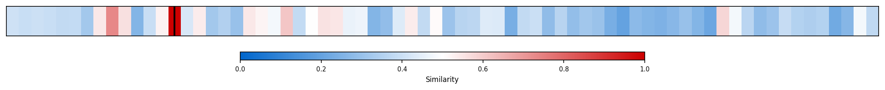
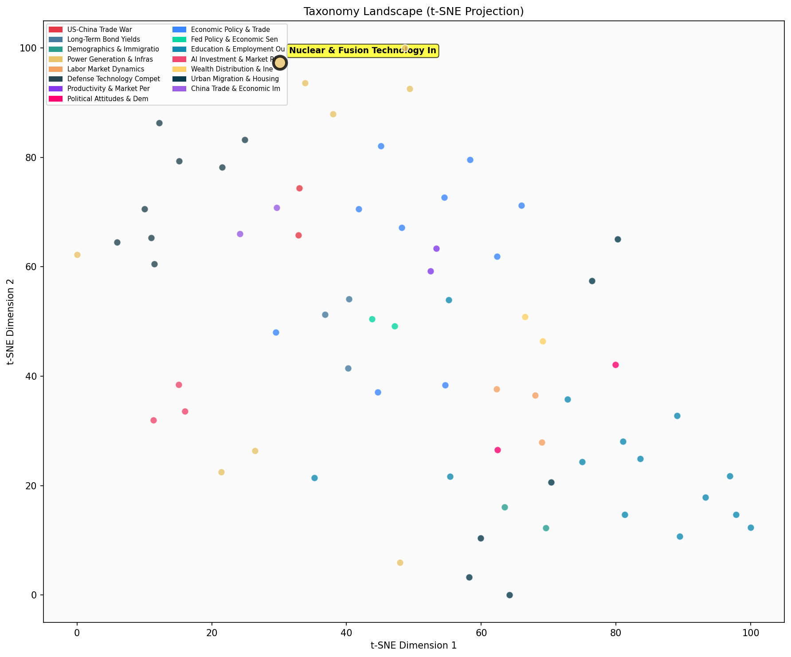

Description
This subcluster focuses on the dramatic surge in investment and development within nuclear and fusion energy technologies, spanning both established nuclear power and cutting-edge fusion startups. Articles predominantly feature investment data, cost analyses, and technological breakthroughs from industry reports, startup announcements, and research institutions. Coverage includes private funding rounds, government policy initiatives, and comparative cost metrics between energy sources. Unlike sibling subclusters examining broad energy production trends or scientific discoveries, this cluster specifically tracks the financial and technological momentum behind nuclear renaissance efforts, emphasizing venture capital flows, regulatory changes, and commercial timelines for next-generation power technologies.
Similarity to All 70 Subclusters
Each cell represents a subcluster. Color intensity shows similarity (blue=low, red=high). Black line marks current subcluster position.
Relationship to Primary Clusters
Average similarity to each of the 15 primary clusters. Larger area = stronger relationship to that cluster.
Taxonomy Landscape
All 70 subclusters positioned by similarity (t-SNE). Current subcluster highlighted with label. Click to enlarge.
Network Connections
Current subcluster at center, connected to related subclusters. Line thickness = similarity strength.
Most Representative Articles
-
1. Private investment in nuclear fusion has surged, with companies raising $2.3bn, over a fifth of whic
-
2. There has been at least $5 billion in private investment into fusion with 75% of the funding taking
-
3. Commonwealth Fusion Systems, a fusion startup backed in part by Bill Gates, plans to generate electr
-
4. .@BillGates broke ground on the first nuclear power plant from @TerraPower, which uses liquid sodium
-
5. The first startup to ever spin off of German's Max Planck Institute is using an alternative approach
Edge Cases (Boundary Articles)
-
1. Texas-based @fervoenergy has conducted an experiment suggesting that geothermal power plants could pThis article is borderline for the "Nuclear & Fusion Technology Investment Surge" cluster because it focuses on geothermal energy storage rather than nuclear or fusion technologies, despite sharing the common theme of clean energy solutions for carbon-free grids. While geothermal power relates to clean energy infrastructure like nuclear and fusion, it represents a fundamentally different technology category that doesn't involve the nuclear processes or investment patterns that define this cluster.
-
2. The first new US nuclear facility in 30 years will start to deliver power this summer; however, costThis article is borderline because while it mentions a new nuclear facility, it emphasizes the negative financial impact of cost overruns and reduced investor confidence, which contradicts the "investment surge" theme of the cluster. The focus on diminished investor interest aligns more closely with broader power sector investment challenges than with the specific narrative of surging nuclear and fusion technology investments.
-
3. Fervo Energy is building a commercial geothermal facility that will power 300,000 Utah homes; the fiThis article is borderline because while it discusses clean energy investment and commercial facility development, it focuses specifically on geothermal technology rather than nuclear or fusion technologies. The content aligns better with broader power generation investment trends than with the nuclear/fusion-specific focus of this cluster.
Original Dendrogram